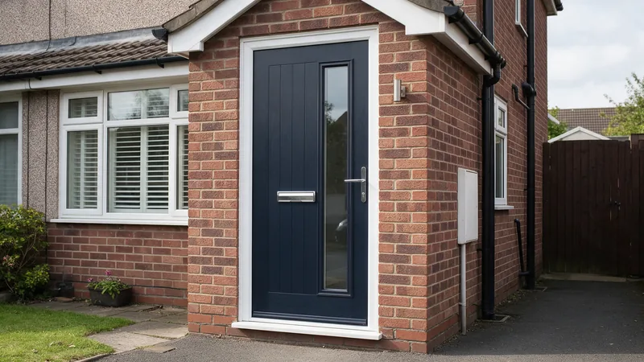
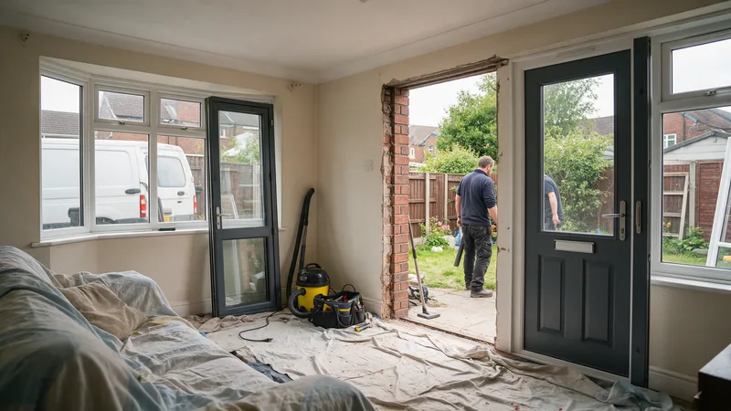

Why composite took over
A composite door is a solid core wrapped in a weatherproof skin, hung in its own frame. It does not swell in the wet the way timber does, it does not go hollow and tinny the way an old uPVC slab can, and it takes a decent multipoint lock without complaining. That is most of the reason it has become the default front door.
The frame is as important as the door. It carries the lock keeps, it takes the weight, and it is what gets packed and fixed into your brickwork. A good door in a frame that has been wedged in with offcuts will drop within a year and you will be lifting the handle to lock it by the second.
The choices worth thinking about
Colour outside and in, the glass and whether you want to be able to see out at a useful height, the furniture, and whether you want a letter plate in the door at all. Then the practical ones: which way it opens, where the hinges go so it does not foul a radiator, and how high the threshold sits if somebody in the house uses a stick or a chair.
Back doors and side doors are the same job with different priorities. Out there it is more about the lock, the glass being obscured and whether a dog can get past you.
Security, honestly
A door is one part of it. The lock, the keeps screwed into something solid, the hinge bolts and the frame all matter as much as the slab itself, and a good door on a soft frame is a nice looking weak point. We fit what goes with the door and tell you plainly where the weak bit of the opening is, which on a lot of houses is a side gate or a back window rather than the front door at all.

Generated photoGenerated for this demo. Not a photograph of a real job.
On the day
How this one usually goes.
- We look at the opening, not just the doorThe frame, the cill, the brickwork and what is behind the plaster. That is what decides how the new frame gets fixed.
- You pick the doorColour, glass, furniture, letter plate, and which way it should open. We bring samples rather than a laptop.
- It gets made to your openingDoors come made to size. Nothing is trimmed on site to make it fit, because a trimmed composite door is a weakened one.
- Out and in the same dayOld door and frame out, new frame packed, levelled and fixed, door hung and adjusted, lock and handle fitted and tested.
- Keys, adjustment and the brickworkKeys tried in the lock with you there, the door locked and unlocked a dozen times, and the brickwork and the inside reveal made good.
A sample running order for this demo. Yours depends on the house.
Questions
Asked about this job.
How long does a front door take?
A morning in most cases, and the house is only open for an hour or so of it. If the frame has rotted into the brickwork or the opening needs making good first, it can run into the afternoon, and we tell you that at the survey.
Can I have the same colour inside and out?
Yes, or different. Grey or black outside with white inside is the usual pick, but a door can be the same both sides. The frame can be matched too, which people often forget to ask about until it is made.
Will you deal with building regulations?
A replacement door comes under the building regulations like a window does. Either the installer certifies it under a competent person scheme, or building control signs it off. Ask whoever quotes which route they use and what paperwork you get. This is a demo site, so it claims neither.
Can you fit a door I have bought myself?
Sometimes, and we would want to see it first. Doors bought online are often a standard size with a frame that does not suit the opening, and fitting one badly is worse than not fitting it. If it will work, we will say so, and if it will not, we will tell you why rather than take the job.
General trade knowledge written for this demo, not advice on your house.
Our work
Sample jobs like this.
 Generated photoFrench doors onto the patioLymm Sample
Generated photoFrench doors onto the patioLymm Sample
Generated photoFitting day, front roomGreat Sankey Sample Generated photoHandle and hinges, not a new windowLymm Sample
Generated photoHandle and hinges, not a new windowLymm SampleMade up samples with generated pictures. Tap one for the detail.
Also
The other things we do.
Replacement windows
Whole houses and single openings. Measured properly, made to those sizes, and fitted without taking the plaster off with them.
More →Bifold and patio doors
Bifolds that stack back and leave the opening clear, sliders that pass behind each other, and french doors where the opening is narrower.
More →Sash window repair and replacement
Cords, weights, beads and draughts put right on the originals, or a new sash window made to the same sightlines when the timber has gone.
More →Misted glass unit replacement
Cloudy glass with the frame still sound is a new sealed unit, not a new window. Usually a short visit and the smaller job by a long way.
More →Window and door repairs
Handles, hinges, locks, gaskets and the mechanism down the edge of a door. The parts wear out long before the frame does.
More →Shall we come and measure?
Tell us what you are looking at and your postcode and we will book a survey. If the glass has gone or a door will not lock, use the urgent line instead.